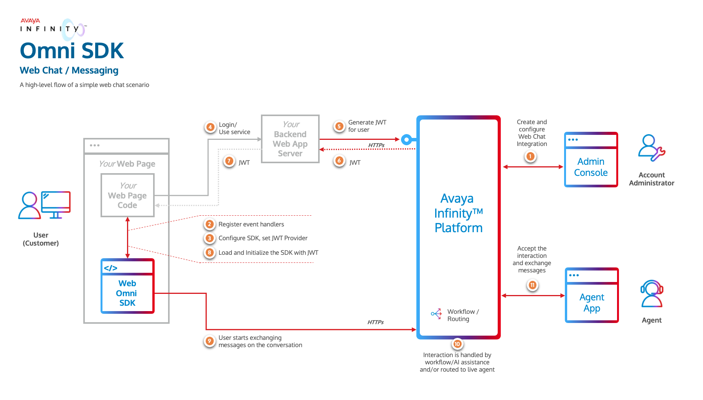

Avaya Infinity Omni SDK
Avaya Infinity™ Omni SDK
Introduction
Avaya Infinity™ platform provides Omni SDK using which you can enable your client applications with chat capabilities of Avaya Infinity™ platform. The Omni SDK is a set of libraries that provide a collection of methods, objects, events and UI components that will allow you to easily integrate your client applications.
Next Steps
-
Review the key components and integration flow involved to acheive Omni SDK integration in the Overview section.
-
Reach out to your Avaya Infinity™ account administrator to obtain appropriate access information for a Web Chat integration, like,
-
for your Backend Web App (To generate JWT):
- Avaya Infinity™ hostname
- Account Id
- Web Chat Integration Id
- Client Id
- Client Secret
-
for use the Omni SDK:
- Avaya Infinity™ hostname
- Web Chat Integration Id
- URL of your Backend Web App Service (to fetch JWT)
-
-
Refer the Omni SDK supporting artifacts:
-
Integrate your client applications with Avaya Omni SDK to enable web chat capabilities.
Overview
Integration with Avaya Infinity™ Omni SDK requires the following steps at a high level:
- Provision a Web Chat Integration
- Understand how to enable your Backend Web App Service to authorize each end client using your Client Application to access Avaya Infinity™ capabilities
- Integrate your Client Application with Omni SDK to use Avaya Infinity™ capabilities.
The below image gives an overview of a high level flow of how these all the components work together to form the solution.

Provision a Web Chat Integration
Your Account Administrator must first create a Web Chat integration for the Omni SDK using the Avaya Infinity™ admin console. An Integration represents the entry point for conversations initiated through your client applications meant for a business function. Multiple Integrations can be created in an Avaya Infinity™ Account to represent various business functions. Various configurations can be set on each Integration to control the behavior of the conversations initiated through it, like,
- routing details for the conversation (workflows and queues)
- attachment types and size limits allowed for the customer to send
- the look and feel of the chat widget including the colors and window title text
- the canned messages that the SDK can display to the customer before the customer sends any message.
- enable or disable various buttons that appear on the messaging widget
Each Web Chat Integration is identified by a unique integrationId. Your Account Administrator should be able to provide you with the integrationId of the Web Chat Integration created for your client application.
When the Omni SDK is loaded and initialized by your client application, it will load the configuration of the Web Chat Integration configured by your Account Administrator and behave accordingly. Hence it is important that the integrationId is correct and the Web Chat Integration is configured properly to meet your business requirements.
Authorization
The Omni SDK requires a JSON Web Token (JWT) to connect to Avaya Infinity™ services. A unique token must be generated for each end user (your customers). Since your backend web application is aware of the user using your services, it should securely fetch the token from Avaya Infinity™ for the user whenever your application requires it.

In order to fetch the JWT from Avaya Infinity™, your backend web application server needs to invoke this API with the required parameters. The API will return a JWT that your client application must use to initialize the Omni SDK.
[!Important] Ensure your backend web application does not expose the clientId and secret required to call the Generate JWT API to your client applications, which is the main reason why the JWT is fetched by your backend web application server. If the clientId and secret are exposed to the end user's device, they could be misused.
Sample Backend Web Application Server
To help you change your backend web application server to fetch JWT for your client applications, a sample backend web application is available for reference here. You can also run this Node.js application (after providing some basic configuration) to quickly test fetching JWTs for your Client Application. Note that this is just a sample application and not meant to be directly used in production.
Using the Omni SDK
Once you have implemented the JwtProvider interface to fetch the JWT from your backend application service, you can start using the Omni SDK in your client application. The Omni SDK is modular and consists of three main modules namely Core, Messaging, and Messaging UI. These modules can be used independently or together based on your requirements.
Core
Provides the basic functionality to establish session with Avaya Infinity™ platform, start and end a conversation for the user along with providing other related utilities. This module is a prerequisite for using any of the other modules. Detailed documentation for the Core module is available here.
Messaging
Provides capability to send messages and listen to events occurring on the conversation. This module is dependent on the Core module. More details about the Messaging module can be found here.
Messaging UI
Provides a built-in Messaging UI component to view the messages exchanged on the conversation and send messages or attachments. The module is dependent on Messaging and Core modules. The look and feel of the Messaging UI component is highly customizable so that you can blend it with your application’s theme. It takes care of rendering all supported rich media types including sending responses when action buttons which are part of the rich media messages are pressed by the user. Using this module is the quickest and easiest way to enable your application with all Avaya Infinity™ Web Chat capabilities. More details about the Messaging UI module can be found here.
Combining the Modules
Each module is packaged as a separate library. You can select the modules that are necessary to meet your business requirements and include them exclusively into your client application. Since every module depends on the Core module, using any of the modules will need having the Core module included, either implicitly or explicitly.
Use Cases
-
Use the Avaya Infinity™ Built-in Messaging UI
If you need to simply add the Avaya Infinity™ Web Chat capabilities to your client application, the easiest way is to use the built-in Messaging UI provided by our Omni SDK. In this case, you need to include the Messaging UI module. It will automatically include the Core and Messaging modules as dependencies.
-
Integrate Avaya Infinity™ Omni SDK with your own Messaging UI
If you want to integrate your own Chat UI with Avaya Infinity™, you need to include the following modules:
- Core module
- Messaging module
License
View LICENSE
Changelog
View CHANGELOG